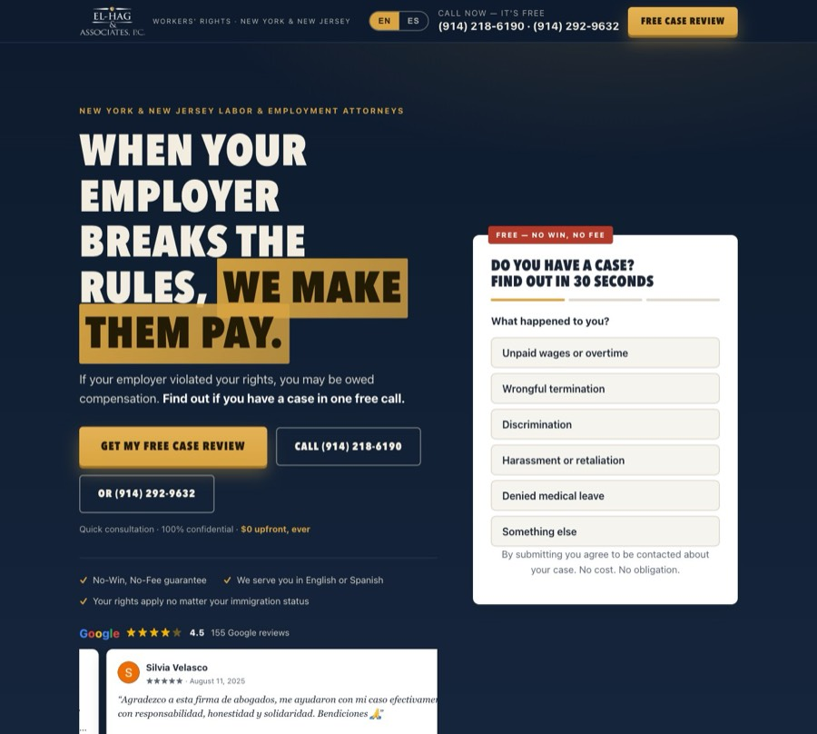

✓Los 2 teléfonos + CTA siempre visibles
✓Titular agresivo del lado del visitante
✓Quiz de 30s: el primer paso es un tap
✓Riesgo cero visible: gratis y $0 por adelantado
✓Desactiva los 3 miedos: costo, idioma y estatus migratorio
✓Google 4.5★ · 155 reseñas girando en loop — confianza en 5 segundos